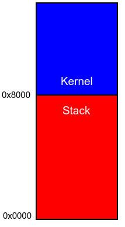

I personally have not worked with developing an OS before, but why not learn. I imagined that when you flipped on a CPU it would start at the 0x0000 address and move forward. However, that doesn't appear to be the exact case.
What I have written here will be based on what I've learned from other guides. Those guides are these:
When you link a normal program it is designed to be loaded into a specific address an run. Since this is an OS. Specifically an OS designed for Raspberry PI. The OS needs to be compiled for an ARM processor and it must be loaded at the address 0x8000 (for 32 bit). This is done with a linker script file.
Historically operating systems were written in Assembly. The benefit of Assembly is that there is full control over everything. With an OS you want to make sure you know what is in memory and where it is in memory. Along with the memory, every command is a one for one command for the CPU to run. However, Assembly is not very easy to read and with fewer and fewer programmers knowing assembly finding help is getting harder and harder. Lasly, all optimization is done by the programmer, and the compiler is combined work of several other people to optimize for you.
With all that being said, Assembly is required to get the C/C++ environment set up. The environment requires that the stack pointer be set to the top of the stack and that the BSS section is defined. The stack will be set to 0x8000 and will work down toward 0x00. The kernel will start at 0x8000 and work upwards in memory. You can read up more on the BSS segment here, but basically when there is an object at the file level that isn't constant it needs a spot to live in memory and this is the spot.
Feel free to follow along. There are no promises that nothing will get broken. You can treat this "tutorial" of sorts as if it were software licensed under the BSD license. To follow along exactly on this... journey. You will want a debian/ubuntu/Linux Mint distrubution.
In summary, the Raspberry PI bootloader looks for the kernel at 0x8000 and before we can use C or C++ we need to set up the environment which means the stack and also the BSS segment.